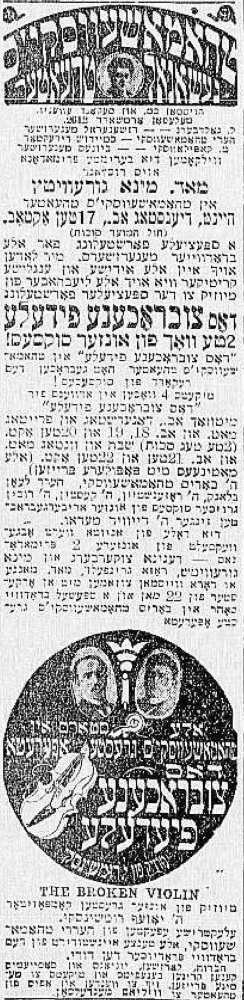

43 February 13th, 1947
This article is not available from the National Library of Israel. The article was obtained from the New York Public Library’s microfiche archives.
The time when Thomashefsky wanted to “write a new page in the history of Yiddish theater in America” with his operetta Dos Tsubrokhene Fidele.
Thomashefsky had always loved grandiose performances. He loved gaudy spectacles that stood out above all else, and he pursued them even more during the years of his affair with Regina Zuckerberg. There wasn’t a thing in the world that was too difficult for him to do for her. In each performance, he tried hard to break new ground. During the 1916 season1 when he staged his operetta Dos Tsubrokhene Fidele, he poured himself into it while working together with Rumshinsky, who wrote the music. While writing the songs for Dos Tsubrokhene Fidele, Thomashefsky grew particularly fond of the romantic songs, so he wrote a couple for himself. We prepared for the performance as though it were a huge wedding.
You could really tell from the rehearsals that Dos Tsubrokhene Fidele was going to be something nobody had ever seen before on the Yiddish stage. Per the agreement made with Rumshinsky, there would be an 25-seat orchestra together with a ballet of 16 young women. They spared no expense - but they did spare expenses with us actors in the troupe!
Aside from Leon Blank, Samuel Rosenstein, and myself, the singer David Medoff was also in the troupe. He had come from Russia, by way of Japan, and Thomashefsky himself had written a song especially for him - "Ikh breng eych a gros fun der haim"2. Medoff was a huge hit with this song.
The troupe had two or three of everything - prima donnas, comedians, and romantic leads. And the whole time we were preparing for the first performance, Thomashefsky would often say that we would “write a new page in the history of Yiddish theater in America” with his operetta Dos Tsubrokhene Fidele.
The operetta was about the lives of actors. When the curtain rises, you see an empty stage where people are setting up decorations for a performance. I was assigned the role of a Yiddish actor called Sigolesko, which was partly - but only partly - based on Mogulesko’s life.

As with everything he did, Thomashefsky really went all out for this operetta, so much that it was excessive. Everything was over the top. In addition, the operetta had a very strange sort of composition, like a rivalry between the music and the libretto. It was hard to know what stood out more on the stage - the music or the acting. The operetta had several delightful numbers, each of which was a pleasure on its own, but they didn’t all “click” together.

In my role as the actor Sigolesko, I had to sing a song called "Ikh bin an aktor". The songs ends with posing this question to the audience: “Tell me, what do you think of me as an actor?” Isidore Lillian wrote the lyrics to this song, and Rumshinsky wrote the music. I confess, I had no great desire to sing this song. What would happen when I asked the audience what they thought of me as an actor? And what would I do if some wise guy in the theater shouted out at the top of his lungs, “Oh, and what kind of an actor is that?!”
Anything could happen…
I was really hesitant to perform this song. I tried to make Rumshinsky and Thomashefsky see that Dos Tsubrokhene Fidele would be fine without this song. But they didn’t want to listen. They were both very insistent that I had to perform it.
And this is how it went:
I used to be a cloakmaker, working at a machine.
I have already done everything there is.
I’m not a greenhorn anymore, full of troubles and hunger.
I became a singer in a choir,
Now I am already an actor.
I make a big splash,
I am an actor, Oi, I am an actor.
I play “Shmendrik”3 and “Kuni Leml”,
And I can whistle like a kettle.
I am an actor, Oi, I am an actor.
Tell me:
What do you think of me as an actor?
By the time it was my turn to sing this song in the first performance, it was already after midnight. Because I was sure that the audience was certainly impatient at the end of a long evening, my heart beat even faster. I was so scared, simply trembling, but I had no other choice but to sing it. And to my great surprise, my song was a huge hit with the audience, and I even had to sing it again.
Even when, after the first performance, several numbers were cut from the show because they couldn’t keep the audiences in the theater so late every night, my number was not cut. In fact it became quite popular and people couldn’t stop singing,
I am an actor, oi, I am an actor!
The melody was so catchy that it begged to be sung.
The great hopes that people pinned on the operetta Dos Tsubrokhene Fidele didn’t exactly pan out. No matter how great the box office earnings, it wasn’t enough to cover the expenses. It was impossible to cover such larger expenses. And so we had to stage a different operetta instead, a less involved one, a less opulent one; and that’s how we ended the season. Thomashefsky’s dreams that Dos Tsubrokhene Fidele would “write a new page in the history of Yiddish theater in America” were dashed.
Rumshinsky had the same dream as Thomashefsky - he too was sure that Dos Tsubrokhene Fidele would usher in a revolution in how operettas in the Yiddish theater were staged. There was even already talk of a special “Thomashefsky-Rumshinsky combination,” which would serve as a model for others. But it didn’t come to pass at all. Rumshinsky left Thomashefsky and went over to work with Yosl Edelstein when he became the manager of the Second Avenue Theater, which had been built for the great artist David Kessler.
There’s one more thing that I want to mention about the time when I played in Thomashefsky’s National Theater:
From the start, Thomashefsky told me that from time to time in the middle of the week, we would put on some of the plays that Bessie Thomashefsky used to excel in, and I would step in to play her roles. Perhaps he wanted to make up for the wrongs done to me when Bessie played all the men’s roles which I should have played. Nu, I thought that now that he and Bessie Thomashefsky had split up, I’d be able to play her roles since he owned the rights to all of those plays. That’s what I thought. And when I appeared in Der Griner Bokher4, people said I was alright in the role.
But even if my acting was alright, something else was not alright - Bessie told me that she wanted to see me, and when I met with her, she was upset with me:
– What is this, you take over and play my roles!? Is this fair? Come on, I dare you - let me hear you say it!
She was crying when she said this to me. I promised her that I would no longer play her roles, and I kept my word.
the 1916/1917 season↩︎
Listen to David Medoff himself sing this song at this link↩︎
Title role in Goldfaden’s play Shmendrik, originated by Mogulesko. The term “shmendrik” comes from this play/character.↩︎
See a placard for this show from 1905, with Bessie Thomashefsky in the lead role↩︎